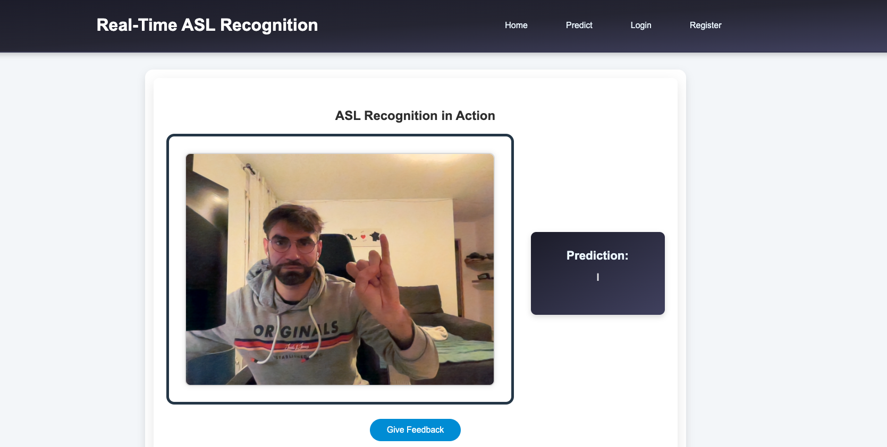
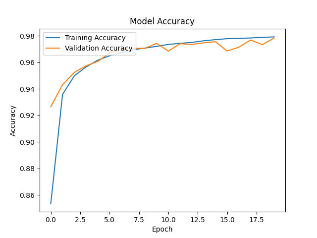
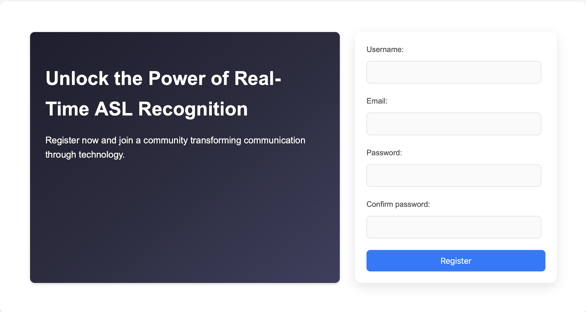

Experience Real-Time American Sign Language Recognition

Discover our innovative platform designed to translate American Sign Language alphabet gestures in real time. Leveraging advanced algorithms and state-of-the-art processing, our technology breaks down communication barriers, making interactions more accessible, inclusive, and seamless.
Discover the American Sign Language Alphabet
Explore each letter of the ASL alphabet and put your skills to the test! Dive into our interactive recognition tool below to start learning and practicing in real time.

Features
Instant ASL Recognition
See each ASL letter detected in real time as you sign. A simple and effective tool for learning and practicing the ASL alphabet, enhancing accessibility one letter at a time.
Precision in ASL Letter Detection
Powered by advanced machine learning, our system delivers high accuracy in recognizing each ASL letter you sign. Enjoy reliable feedback to support your learning journey.
User-Friendly Interface
Our platform is designed for effortless navigation, offering an intuitive and accessible experience for all users—no prior knowledge required.
About Us
Driven by a passion for inclusivity, our journey started with a simple goal: to make communication accessible to everyone. Inspired by witnessing the challenges faced by friends and family in expressing themselves, we set out to create a tool that empowers users to communicate freely and effectively.
This project represents commitment, hard work, and dedication to breaking down communication barriers, and we’re thrilled to share it with the world!
- Maxime Martin - LinkedIn | GitHub | GitHub Repository